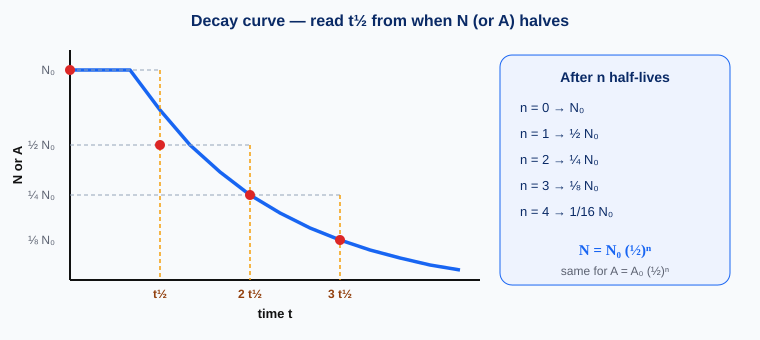

Lesson 5.2a: Half-life, Activity and Safety （半衰期、活度與安全）
Half-life is the time for half the undecayed nuclei (or the activity) to fall to half. Activity counts decays per second. You will also correct for background and practise school-lab safety.
Hong Kong hook: granite and building materials add a little radon to indoor air; airline crews see higher cosmic-ray background — both reason we teach careful measurement and “time, distance, shielding.”
Half-life （半衰期）
Radioactive decay is random for a single nucleus — you cannot say exactly when one nucleus will decay. But for a large sample, the number of undecayed nuclei falls to half after a fixed time.
- t½ is a characteristic of the radionuclide.
- It does not depend on how much sample you have, or on ordinary environmental factors (temperature, pressure) in school-level treatment.
- Examples span seconds to billions of years (e.g. Na-24 ≈ 15 h; C-14 ≈ 5730 y; U-235 ≈ 7×108 y).
Counting half-lives （半衰期次數）
After n half-lives, the remaining fraction is (½)n.
| n (half-lives) | 0 | 1 | 2 | 3 | 4 |
|---|---|---|---|---|---|
| Fraction left | 1 | ½ | ¼ | ⅛ | 1/16 |
| Example N₀ = 40×109 | 40 | 20 | 10 | 5 | 2.5 (×109) |
Activity （活度）
Activity A measures how strong a sample is: the number of nuclei decaying per unit time.
School sealed sources are typically of order ~105 Bq (notes) — small, but still handled with rules.
- More undecayed nuclei → higher activity: A ∝ N.
- So activity follows the same half-life pattern:
Decay curve （衰變曲線）
A graph of N vs t (or A vs t) is a decay curve. Because A ∝ N, both have the same shape.

Find t½: pick a value on the vertical axis, find when it has halved, read Δt. Check at more than one place on the curve.
- Note A₀ (or N₀) at t = 0.
- Find the time when the reading is ½ A₀ — that time is t½.
- Optional check: time from ½ A₀ to ¼ A₀ should be another t½.
Background radiation （本底輻射）
A GM counter never reads exactly zero with no school source nearby. Background comes from rocks / building materials, radon, cosmic rays, and traces in the environment.
Use the corrected rate when finding half-life from count-rate data.
Measured count rate falls then levels off (~40 cpm in a notes example). The flat part ≈ background. Initial corrected rate = measured − background; find when corrected rate halves.
Radiation safety （輻射安全）
Ionising radiation can damage cells. Equivalent dose is measured in sievert (Sv) (accounts for biological effect).
- Time: shorter exposure → smaller dose.
- Distance: stand further away; intensity falls rapidly with distance for a point-like source.
- Shielding: appropriate absorber (link to 5.1a: paper / Al / lead depending on type).
- Use tongs / handling tools; never touch the active face of a sealed source.
- Keep sources in labelled containers; return to storage promptly.
- Do not eat or drink near sources; wash hands after the practical.
- Point sources away from people; use the shielding provided.
Worked examples
Count how many times the quantity halves (n), then use t = n × t½ or N = N₀ (½)n.
N₀ = 800. How many remain after 3 half-lives?
Activity falls from 800 Bq to 100 Bq. t½ = 2 h. Find the time taken.
A₀ = 2000 Bq; after 4 h, A = 125 Bq. Find t½.
Half-life & activity basics
Half-life explorer （半衰期探測）
Set N₀ (or think of it as A₀ scale), t½ and time. Readouts use N = N₀ (½)t/t½. Play advances time along the live graph.
N = N₀ × (½)n with n = t / t½.
From the formula & curve
Numerical & background
Safety
Remember
- t½: time for N or A → half; characteristic of the nuclide.
- N = N₀ (½)n and A = A₀ (½)n; A ∝ N; unit Bq.
- Read t½ from a decay curve; subtract background.
- Dose in Sv; reduce with time, distance, shielding; school lab rules.